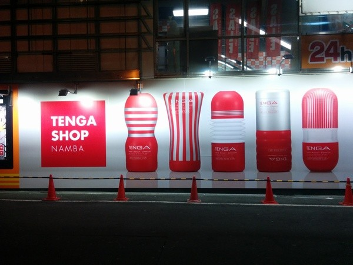

Introduction
Oh boy! This post is going to be a doozy!! In the off chance that you don't know me that well there are 2 things that make me very uncomfortable: people who belittle the beautifully serene color orange, and people displaying their naked bodes (and of course the proverbial “sexy times”). Thankfully no one in Japan has dissed the color orange (and rightfully so, it is the most gorgeous color in existence). But boy oh boy, there sure are a lot of interesting things in this country. I was literally in shock (true story, ask my friends) when I saw a particular image….
Story Time At the コンビニ (Convenience Store)
Convenience stores in Japan are very, well for the lack of a better term, convenient. You can pay your bills, get money from the ATM, by food, by supplies, and many other things. They are very different than gas stations in America (gas stations and convenience stores are two separate shops). Because they have a lot to offer, many people, including myself, frequent convenience stores to buy inexpensive items.
On one sunny day, my friends and I decide to go to a convenience store (nothing out of the ordinary). After buying our items, we decided to look around for a moment. We noticed in the front of the store that there was a magazine section. We thought, “Oh there must be manga up there. Let’s take a look.” So we proceeded to the front of the store. There definitely was a lot of manga at the front, so we took great pleasure in flipping through some of our favorite manga. However, darkness was looming in wait for us. One of my friends thought it would be a great idea to look at the magazines stowed in the corner. He pulled out a magazine that looked like Cosmopolitan but the cover was a little raunchier. My friend quickly placed the magazine back into its resting position.
On one sunny day, my friends and I decide to go to a convenience store (nothing out of the ordinary). After buying our items, we decided to look around for a moment. We noticed in the front of the store that there was a magazine section. We thought, “Oh there must be manga up there. Let’s take a look.” So we proceeded to the front of the store. There definitely was a lot of manga at the front, so we took great pleasure in flipping through some of our favorite manga. However, darkness was looming in wait for us. One of my friends thought it would be a great idea to look at the magazines stowed in the corner. He pulled out a magazine that looked like Cosmopolitan but the cover was a little raunchier. My friend quickly placed the magazine back into its resting position.
Guess what? IT GOT WAAAAAAY WORSE!!!!!!!!
My friend pulls out the magazine, and WABBAM! On the front cover of this magazine is an act that happens in the middle of a certain act that may be at the end of said act (sorry ambiguity wins the day). I was literally in shock, as were all of us. The horror on our faces (and I am guessing mine was the winner) prompted the girls to start laughing uncontrollably. My friend slowly put the magazine in place and I started to pace around the store and then outside to calm myself. Nothing like that would be shown in America. This definitely was the start of something new.
Nipponbashi (DenDen Town)
Back to DenDen Town. So remember how I said I saw some interesting things? Here was a billboard (technically it wasn’t a billboard since it was on a building but same difference). I was so surprised that this was out in the open, as this would be hush hush in America.
If you don't get the picture, great good for you! Otherwise.... Yeah. I am also not going to zoom on the writing because it will give it away (I'm all about being ambigious, remember?). Also, we were walking through this part of the city and we another interesting sight. We saw a woman, plastered on a billboard in her full glory. I was very surprised and I started to freak out with one of my friends since this wouldn't be shown in America (although there is nothing wrong with the billboard. I was just surprised since I have never seen anything like it.)
Onsen
So in Japan, they have these public baths called Onsen (温泉 ). Lots of Japanese people go to these spas as it is a great way to relax. Most onsens are split by gender, and for good reason. Why you may ask? Because you have to get completely naked….
For the first time in my life, I had to get buck naked in front of a TON of strangers - besides my parents (when I was young of course), who were also buck naked. This only added to my anxiety of not being around people who are naked. I hate nudity of pretty much of all kinds, but now I guess I am desensitized haha. Will I go back to an Onsen? Probably not. But I guess I have definitely gone out of my comfort zone now. Thanks Japan lol.
Conclusion
My hope for the reader is that may realize some of the difference between their culture (if there are such differences) and Japan in terms of nudity. I don’t think Japan’s acceptance of nudity a bad or good thing. It’s just different. Several countries around the world are like Japan in this aspect, but it is completely alien for a person who is from America. However, this difference doesn’t mean that it is bad.
For example, in the US the media is heavily centered on violence. Many people from different cultures, including Japan, would find this distasteful. However, to Americans this aspect doesn’t faze them. The same goes for nudity and sexuality in Asia and Europe. They are neither distasteful (America’s obsession of violence or Japan’s acceptance of nudity) nor tasteful. They are just different aspects of culture that should be respected as such. Sure I may not agree with it (although now I am pretty desensitized to all of it haha), but at the same time I recognize that is a part of Japanese culture and thus I accept it.
Anime Quote of the Week
"I will search the world to my heart’s content to figure out who I am.” – Aladdin
I resonate with this quote quite well. I have changed a lot ever since I have embarked on my journey to Japan. I am starting to realize what is important to me, things that don't really matter to me, and things that I should focus on. I thought I had myself pretty figured out, but I was quite mistaken. Now, I want to travel more of this world and meet different people, engage in different cultures, share cultural exchanges, and become more aware of varying perspectives of this world.
Until next time friends. じゃあ、また - Joel Kwaku Owusu Afriyie